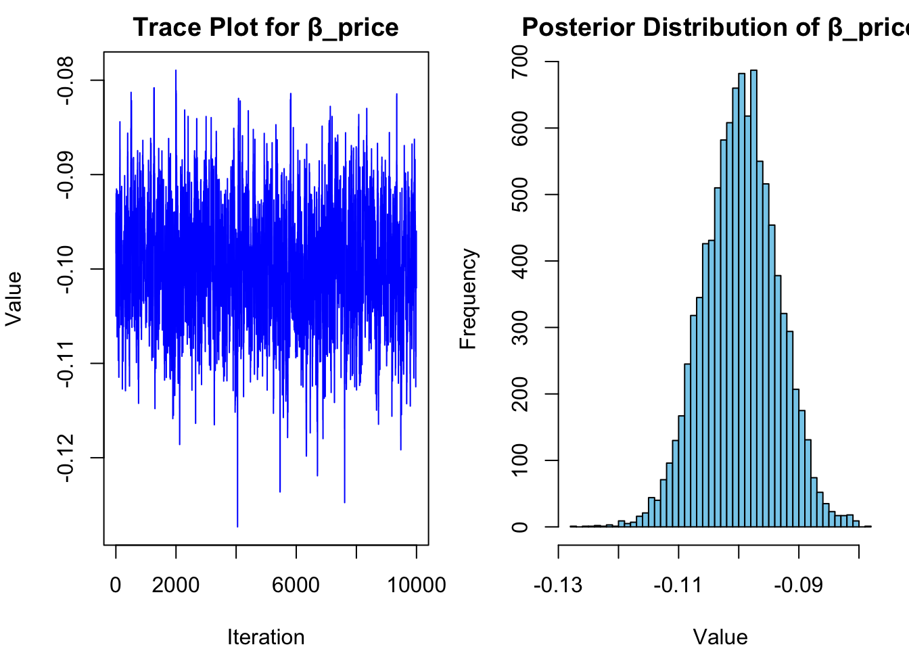

# set seed for reproducibility
set.seed(123)
# define attributes
brand <- c("N", "P", "H") # Netflix, Prime, Hulu
ad <- c("Yes", "No")
price <- seq(8, 32, by=4)
# generate all possible profiles
profiles <- expand.grid(
brand = brand,
ad = ad,
price = price
)
m <- nrow(profiles)
# assign part-worth utilities (true parameters)
b_util <- c(N = 1.0, P = 0.5, H = 0)
a_util <- c(Yes = -0.8, No = 0.0)
p_util <- function(p) -0.1 * p
# number of respondents, choice tasks, and alternatives per task
n_peeps <- 100
n_tasks <- 10
n_alts <- 3
# function to simulate one respondent’s data
sim_one <- function(id) {
datlist <- list()
# loop over choice tasks
for (t in 1:n_tasks) {
# randomly sample 3 alts (better practice would be to use a design)
dat <- cbind(resp=id, task=t, profiles[sample(m, size=n_alts), ])
# compute deterministic portion of utility
dat$v <- b_util[dat$brand] + a_util[dat$ad] + p_util(dat$price) |> round(10)
# add Gumbel noise (Type I extreme value)
dat$e <- -log(-log(runif(n_alts)))
dat$u <- dat$v + dat$e
# identify chosen alternative
dat$choice <- as.integer(dat$u == max(dat$u))
# store task
datlist[[t]] <- dat
}
# combine all tasks for one respondent
do.call(rbind, datlist)
}
# simulate data for all respondents
conjoint_data <- do.call(rbind, lapply(1:n_peeps, sim_one))
# remove values unobservable to the researcher
conjoint_data <- conjoint_data[ , c("resp", "task", "brand", "ad", "price", "choice")]
# clean up
rm(list=setdiff(ls(), "conjoint_data"))Multinomial Logit Model
This assignment expores two methods for estimating the MNL model: (1) via Maximum Likelihood, and (2) via a Bayesian approach using a Metropolis-Hastings MCMC algorithm.
1. Likelihood for the Multi-nomial Logit (MNL) Model
Suppose we have \(i=1,\ldots,n\) consumers who each select exactly one product \(j\) from a set of \(J\) products. The outcome variable is the identity of the product chosen \(y_i \in \{1, \ldots, J\}\) or equivalently a vector of \(J-1\) zeros and \(1\) one, where the \(1\) indicates the selected product. For example, if the third product was chosen out of 3 products, then either \(y=3\) or \(y=(0,0,1)\) depending on how we want to represent it. Suppose also that we have a vector of data on each product \(x_j\) (eg, brand, price, etc.).
We model the consumer’s decision as the selection of the product that provides the most utility, and we’ll specify the utility function as a linear function of the product characteristics:
\[ U_{ij} = x_j'\beta + \epsilon_{ij} \]
where \(\epsilon_{ij}\) is an i.i.d. extreme value error term.
The choice of the i.i.d. extreme value error term leads to a closed-form expression for the probability that consumer \(i\) chooses product \(j\):
\[ \mathbb{P}_i(j) = \frac{e^{x_j'\beta}}{\sum_{k=1}^Je^{x_k'\beta}} \]
For example, if there are 3 products, the probability that consumer \(i\) chooses product 3 is:
\[ \mathbb{P}_i(3) = \frac{e^{x_3'\beta}}{e^{x_1'\beta} + e^{x_2'\beta} + e^{x_3'\beta}} \]
A clever way to write the individual likelihood function for consumer \(i\) is the product of the \(J\) probabilities, each raised to the power of an indicator variable (\(\delta_{ij}\)) that indicates the chosen product:
\[ L_i(\beta) = \prod_{j=1}^J \mathbb{P}_i(j)^{\delta_{ij}} = \mathbb{P}_i(1)^{\delta_{i1}} \times \ldots \times \mathbb{P}_i(J)^{\delta_{iJ}}\]
Notice that if the consumer selected product \(j=3\), then \(\delta_{i3}=1\) while \(\delta_{i1}=\delta_{i2}=0\) and the likelihood is:
\[ L_i(\beta) = \mathbb{P}_i(1)^0 \times \mathbb{P}_i(2)^0 \times \mathbb{P}_i(3)^1 = \mathbb{P}_i(3) = \frac{e^{x_3'\beta}}{\sum_{k=1}^3e^{x_k'\beta}} \]
The joint likelihood (across all consumers) is the product of the \(n\) individual likelihoods:
\[ L_n(\beta) = \prod_{i=1}^n L_i(\beta) = \prod_{i=1}^n \prod_{j=1}^J \mathbb{P}_i(j)^{\delta_{ij}} \]
And the joint log-likelihood function is:
\[ \ell_n(\beta) = \sum_{i=1}^n \sum_{j=1}^J \delta_{ij} \log(\mathbb{P}_i(j)) \]
2. Simulate Conjoint Data
We will simulate data from a conjoint experiment about video content streaming services. We elect to simulate 100 respondents, each completing 10 choice tasks, where they choose from three alternatives per task. For simplicity, there is not a “no choice” option; each simulated respondent must select one of the 3 alternatives.
Each alternative is a hypothetical streaming offer consistent of three attributes: (1) brand is either Netflix, Amazon Prime, or Hulu; (2) ads can either be part of the experience, or it can be ad-free, and (3) price per month ranges from $4 to $32 in increments of $4.
The part-worths (ie, preference weights or beta parameters) for the attribute levels will be 1.0 for Netflix, 0.5 for Amazon Prime (with 0 for Hulu as the reference brand); -0.8 for included adverstisements (0 for ad-free); and -0.1*price so that utility to consumer \(i\) for hypothethical streaming service \(j\) is
\[ u_{ij} = (1 \times Netflix_j) + (0.5 \times Prime_j) + (-0.8*Ads_j) - 0.1\times Price_j + \varepsilon_{ij} \]
where the variables are binary indicators and \(\varepsilon\) is Type 1 Extreme Value (ie, Gumble) distributed.
The following code provides the simulation of the conjoint data.
Note
3. Preparing the Data for Estimation
The “hard part” of the MNL likelihood function is organizing the data, as we need to keep track of 3 dimensions (consumer \(i\), covariate \(k\), and product \(j\)) instead of the typical 2 dimensions for cross-sectional regression models (consumer \(i\) and covariate \(k\)). The fact that each task for each respondent has the same number of alternatives (3) helps. In addition, we need to convert the categorical variables for brand and ads into binary variables.
library(dplyr)
# Step 1: Load data
conjoint_data <- read.csv("conjoint_data.csv")
# Step 2: Set factor levels (reference categories: H for brand, No for ad)
conjoint_data <- conjoint_data %>%
mutate(
brand = factor(brand, levels = c("H", "P", "N")),
ad = factor(ad, levels = c("No", "Yes"))
)
# Step 3: Create dummy variables (drop reference category)
conjoint_data <- conjoint_data %>%
mutate(
brand_P = as.integer(brand == "P"),
brand_N = as.integer(brand == "N"),
ad_Yes = as.integer(ad == "Yes")
)
# Step 4: Create a unique identifier for each choice set
conjoint_data <- conjoint_data %>%
mutate(choice_set = paste(resp, task, sep = "_"))
# Step 5: Reorder columns
conjoint_data <- conjoint_data %>%
select(resp, task, choice_set, choice, brand_P, brand_N, ad_Yes, price)
# Step 6: Preview
head(conjoint_data) resp task choice_set choice brand_P brand_N ad_Yes price
1 1 1 1_1 1 0 1 1 28
2 1 1 1_1 0 0 0 1 16
3 1 1 1_1 0 1 0 1 16
4 1 2 1_2 0 0 1 1 32
5 1 2 1_2 1 1 0 1 16
6 1 2 1_2 0 0 1 1 24::::
4. Estimation via Maximum Likelihood
We now estimate the part-worth utilities using Maximum Likelihood Estimation (MLE). Assuming that the data has already been reshaped and dummy-coded in Section 3, we extract the relevant variables, define the log-likelihood function for the MNL model, and use the BFGS algorithm to find the optimal coefficients.
library(dplyr)
# Step 1: Prepare design matrix X and response y
X <- as.matrix(conjoint_data %>% select(brand_P, brand_N, ad_Yes, price))
y <- conjoint_data$choice
choice_set <- conjoint_data$choice_set
set_ids <- as.numeric(factor(choice_set))
n_sets <- length(unique(set_ids))
# Step 2: Define negative log-likelihood function
mnl_log_likelihood <- function(beta) {
utilities <- X %*% beta
exp_util <- exp(utilities)
denom <- numeric(nrow(X))
for (s in 1:n_sets) {
mask <- which(set_ids == s)
denom[mask] <- sum(exp_util[mask])
}
probs <- exp_util / denom
log_lik <- sum(y * log(probs + 1e-12)) # add small epsilon to avoid log(0)
return(-log_lik)
}
# Step 3: Run MLE using optim
init_beta <- rep(0, ncol(X))
result <- optim(par = init_beta, fn = mnl_log_likelihood, method = "BFGS", hessian = TRUE)
# Step 4: Show estimated coefficients
coef_names <- c("brand_P", "brand_N", "ad_Yes", "price")
setNames(result$par, coef_names) brand_P brand_N ad_Yes price
0.50161701 0.94120473 -0.73200143 -0.09948157 ::::
# Compute standard errors from inverse Hessian
se <- sqrt(diag(solve(result$hessian)))
z <- 1.96
confint <- data.frame(
Estimate = result$par,
Std.Error = se,
CI.Lower = result$par - z * se,
CI.Upper = result$par + z * se
)
rownames(confint) <- coef_names
confint Estimate Std.Error CI.Lower CI.Upper
brand_P 0.50161701 0.111100000 0.2838610 0.71937301
brand_N 0.94120473 0.111039639 0.7235670 1.15884242
ad_Yes -0.73200143 0.087809687 -0.9041084 -0.55989445
price -0.09948157 0.006333649 -0.1118955 -0.08706762::::
This code computes the MLEs for the MNL model using scipy.optimize.minimize, extracts the covariance matrix from the inverse Hessian, calculates standard errors, and constructs 95% confidence intervals for each parameter:
param_names <- c("brand_P", "brand_N", "ad_Yes", "price")
estimates <- result$par
hessian_inv <- solve(result$hessian)
se <- sqrt(diag(hessian_inv))
z <- 1.96
lower <- estimates - z * se
upper <- estimates + z * se
summary <- data.frame(
Estimate = estimates,
`Std. Error` = se,
`CI Lower (95%)` = lower,
`CI Upper (95%)` = upper,
row.names = param_names
)
summary Estimate Std..Error CI.Lower..95.. CI.Upper..95..
brand_P 0.50161701 0.111100000 0.2838610 0.71937301
brand_N 0.94120473 0.111039639 0.7235670 1.15884242
ad_Yes -0.73200143 0.087809687 -0.9041084 -0.55989445
price -0.09948157 0.006333649 -0.1118955 -0.08706762::::
5. Estimation via Bayesian Methods
This code implements a Metropolis-Hastings MCMC sampler to estimate the posterior distribution of the four MNL parameters. It uses:
A log-likelihood from the MNL model, Normal priors: N(0,5) for binary variables, N(0,1) for price, Independent normal proposals for each parameter.
The algorithm runs for 11,000 steps, discards the first 1,000 as burn-in, and summarizes the posterior means and 95% credible intervals for each parameter.
X <- as.matrix(conjoint_data %>% select(brand_P, brand_N, ad_Yes, price))
y <- conjoint_data$choice
choice_set <- conjoint_data$choice_set
set_ids <- as.numeric(factor(choice_set))
n_sets <- length(unique(set_ids))
log_likelihood <- function(beta) {
utilities <- X %*% beta
exp_util <- exp(utilities)
denom <- numeric(nrow(X))
for (s in 1:n_sets) {
mask <- which(set_ids == s)
denom[mask] <- sum(exp_util[mask])
}
probs <- exp_util / denom
sum(y * log(probs + 1e-12))
}
log_prior <- function(beta) {
lp <- -0.5 * sum(beta[1:3]^2 / 5 + log(5) * 3)
lp <- lp - 0.5 * (beta[4]^2 / 1 + log(1))
lp
}
log_posterior <- function(beta) {
log_likelihood(beta) + log_prior(beta)
}
proposal_sd <- c(0.05, 0.05, 0.05, 0.005)
n_steps <- 11000
burn_in <- 1000
samples <- matrix(NA, nrow = n_steps, ncol = 4)
samples[1, ] <- rep(0, 4)
accepted <- 0
for (t in 2:n_steps) {
current <- samples[t - 1, ]
proposal <- current + rnorm(4, mean = 0, sd = proposal_sd)
log_post_current <- log_posterior(current)
log_post_proposal <- log_posterior(proposal)
log_accept_ratio <- log_post_proposal - log_post_current
if (log(runif(1)) < log_accept_ratio) {
samples[t, ] <- proposal
accepted <- accepted + 1
} else {
samples[t, ] <- current
}
}
samples_post <- samples[(burn_in + 1):n_steps, ]
param_names <- c("brand_P", "brand_N", "ad_Yes", "price")
posterior_summary <- data.frame(
Mean = apply(samples_post, 2, mean),
`Lower 95%` = apply(samples_post, 2, quantile, 0.025),
`Upper 95%` = apply(samples_post, 2, quantile, 0.975)
)
rownames(posterior_summary) <- param_names
posterior_summary Mean Lower.95. Upper.95.
brand_P 0.50067362 0.2560596 0.7246752
brand_N 0.94067500 0.7179513 1.1580759
ad_Yes -0.72871233 -0.9056909 -0.5602154
price -0.09968015 -0.1116646 -0.0880743::::
This code visualizes the MCMC results for the price coefficient by plotting its sampled values across iterations (trace plot) and showing the distribution of those values (posterior histogram) after burn-in:
price_samples <- samples_post[, 4]
par(mfrow = c(1, 2), mar = c(4, 4, 2, 1))
# Trace plot
plot(price_samples, type = "l", col = "blue", main = "Trace Plot for β_price",
xlab = "Iteration", ylab = "Value")
# Histogram
hist(price_samples, breaks = 40, col = "skyblue", border = "black",
main = "Posterior Distribution of β_price",
xlab = "Value", ylab = "Frequency")
::::
This code summarizes the posterior statistics from the MCMC sampler and compares them side-by-side with the MLE results obtained earlier:
param_names <- c("brand_P", "brand_N", "ad_Yes", "price")
# ---- Bayes ----
posterior_mean <- colMeans(samples_post)
posterior_sd <- apply(samples_post, 2, sd)
posterior_ci_lower <- apply(samples_post, 2, quantile, 0.025)
posterior_ci_upper <- apply(samples_post, 2, quantile, 0.975)
posterior_stats <- data.frame(
`Mean (Bayes)` = posterior_mean,
`Std Dev (Bayes)` = posterior_sd,
`Lower 95% (Bayes)` = posterior_ci_lower,
`Upper 95% (Bayes)` = posterior_ci_upper,
row.names = param_names
)
# ---- MLE ----
mle_estimates <- result$par
hessian_inv <- solve(result$hessian)
mle_se <- sqrt(diag(hessian_inv))
mle_stats <- data.frame(
`Mean (MLE)` = mle_estimates,
`Std Dev (MLE)` = mle_se,
`Lower 95% (MLE)` = mle_estimates - 1.96 * mle_se,
`Upper 95% (MLE)` = mle_estimates + 1.96 * mle_se,
row.names = param_names
)
comparison <- cbind(mle_stats, posterior_stats)
comparison Mean..MLE. Std.Dev..MLE. Lower.95...MLE. Upper.95...MLE. Mean..Bayes.
brand_P 0.50161701 0.111100000 0.2838610 0.71937301 0.50067362
brand_N 0.94120473 0.111039639 0.7235670 1.15884242 0.94067500
ad_Yes -0.73200143 0.087809687 -0.9041084 -0.55989445 -0.72871233
price -0.09948157 0.006333649 -0.1118955 -0.08706762 -0.09968015
Std.Dev..Bayes. Lower.95...Bayes. Upper.95...Bayes.
brand_P 0.116980472 0.2560596 0.7246752
brand_N 0.112625398 0.7179513 1.1580759
ad_Yes 0.088558003 -0.9056909 -0.5602154
price 0.006121052 -0.1116646 -0.0880743::::
6. Discussion
If we had not simulated the data and were instead analyzing real-world survey responses, we would interpret the parameter estimates as reflecting consumer preferences inferred from observed choices.
For example, if the estimate for β_Netflix is greater than β_Prime, this indicates that — holding other attributes constant — consumers exhibit a stronger preference for Netflix over Amazon Prime. In a utility-maximizing framework, higher part-worths translate to higher probabilities of choice.
Similarly, the negative estimate for β_price is economically intuitive. It implies that, all else equal, increasing the monthly price reduces the utility of a streaming service — and thus makes it less likely to be chosen. A negative price coefficient is a typical and expected result in discrete choice modeling.
Overall, these signs and magnitudes align with what we would expect in practice: consumers prefer premium brands and ad-free experiences, but are sensitive to price. The statistical and Bayesian consistency across the estimation methods provides further confidence in these findings.
In real-world applications, individuals often differ in their preferences — some may be highly price-sensitive, while others care more about brand or ad-free experiences. A multi-level or hierarchical (aka mixed or random-parameter) logit model captures this heterogeneity by allowing each respondent to have their own set of preference parameters.
To simulate data from such a model, and to estimate it, we would make the following key changes:
Data Simulation Changes
Instead of drawing a single set of part-worths β, we simulate a distribution over betas: 𝛽_𝑖 ∼ N(μ,Σ) where 𝜇 is the population-level mean vector, and Σ is the covariance matrix of individual differences. For each respondent 𝑖, we sample β_i and use it to generate their choices across all tasks.
Estimation Changes
The likelihood becomes a marginal likelihood, integrating over each individual’s latent β_i. This often requires: Bayesian methods like Gibbs sampling or Hamiltonian Monte Carlo, or Simulation-based frequentist methods like simulated maximum likelihood using Halton or Sobol draws. We now estimate: The population-level means μ The variances and possibly covariances in Σ
Intuition
This model captures individual-level heterogeneity, providing more personalized insights. It improves predictive accuracy in applied settings like product design and pricing because it doesn’t assume all consumers behave identically.